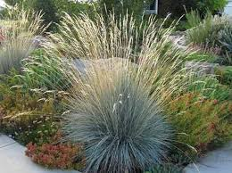
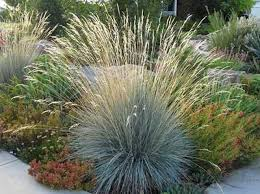

А зараз я вам розповім про рослинний світ Карпат
Дзво́ники карпатські (Campanula carpatica Jacq.) — вид рослин роду дзвоників, реліктовий ендемічний вид на північно-східній межі свого ареалу.
Дзвоники карпатські ростуть поодиноко або групами. Локальні дифузні популяції можуть займати досить великі
площі із низькою щільністю особин, повночленні і відносно стабільні. Головними причинами зміни чисельності є
наявність лімітуючих факторів росту у вигляді карбонатних субстратів. Негативний вплив також
може мати випасання свійських тварин і пов'язана з ним евтрофікація екотопів.
Зубни́ця зало́зиста (Dentaria glandulosa) — багаторічна рослина родини капустяних. Релікт третинного періоду. Весняний ефемероїд
із трійчастими листками і відносно великими пурпуровими квітами. Вид поширений у Центральній та
Південно-Східній Європі, Малій Азії та на Кавказі. Зростає у хвойних та листяних лісах, де часто утворює локальні зарості.
Це багаторічна рослина 50—70 см заввишки.
В Україні вид росте на виходах корінних порід, крутих схилах
та уступах, біля підніжжя скель та урвищ — у Карпатах,
рідко (хр. Свидовець, Мармарошські та Чивчинські гори). Карпатський ендемік[2].
 

Вид рослин з родини айстрових (Asteraceae), поширений у Польщі, Чехії, Словаччині, Румунії, Україні.
Поширений у Польщі, Чехії, Словаччині, Румунії, Україні.
В Україні вид зростає в субальпійському і альпійському поясах — у Карпатах.
Багаторічна рослина 10–20 см.
В Україні вид росте в альпійському та субальпійському поясах,
на висотах 1200–2000 метрів — у Карпатах (гори Близниця, Говерла), рідко.
Багаторічник заввишки 20-40 см, має товсте горизонтальне кореневище із запасальною функцією.
Вид поширений здебільшого в Карпатах,
на території України, Польщі, Румунії, Угорщині, Чехії та Словаччині. В Україні зустрічається
в різноманітних біотопах, частина з яких розташована на значній відстані від Карпат
(Хмельницька, Тернопільська, Житомирська області[2]).
Природний ареал лежить у Карпатах і Балканських горах — Польща, Словаччина, Румунія, Україна, Сербія, Болгарія та Греція.
В Українських Карпатах росте в субальпійському поясі від 1140–1890 м над рівнем моря в гірському масиві Чорногора.